Unit 02 · Hardware-aware design and compilers
Lesson 02: Hardware-aware design and compilers
Unit: cs229s-U02. Concepts: cs229s-U02-C01 to C12. Date: 2026-10-06. Baseline: October 6, 2026. Claim class for every leaf: PLANNED / SOURCE ATTRIBUTION PENDING. Family anchor: CALENDAR-ANCHORED, Week 2, Sep 30, “Hardware Aware Algorithm Design” (Introduction to Compilers and the GPU Memory Hierarchy, Introduction to Arithmetic Intensity and Measures of Efficiency).
How to read this lesson
Same 15-item contract as U01, in compact form. Shared
symbols follow notation_and_shapes.md. Hardware numbers
are labeled toy specs (round numbers for arithmetic, Not in
source as vendor claims) unless marked as publicly
documented.
C01: GPU hierarchy
Source, scope, objectives, dependencies
Calendar anchor: Week 2, Sep 30, “Introduction to Compilers and the GPU Memory Hierarchy”. Scope: the memory levels of a GPU and their speeds. Objective: name each level with a size and a bandwidth order. Depends on P15.
Motivating question and tiny toy
Question: the same add runs 100x slower in one place than another. What are the places? Toy: add two vectors of 1024 fp16 numbers.
Mental model
A kitchen. Registers are your hands (fastest, tiny). Shared memory is the countertop (fast, shared with your station). L2 is the pantry down the hall. HBM is the warehouse across town. The recipe is the same, the trip time differs by 100x.
Objects, shapes, assumptions
- Registers: per thread, ~256 KB per SM, ~1 cycle.
- Shared memory / L1: per block, ~100-200 KB per SM, ~20-30 cycles.
- L2 cache: device-wide, tens of MB, ~200 cycles.
- HBM: device-wide, tens of GB, ~400-800 cycles, ~2 TB/s.
- Assumption: numbers are toy orders, labeled Not in source. Real chips vary by generation.
Derivation
Time to read N bytes from a level with bandwidth B is N / B. For 2048 bytes (1024 fp16): from registers the cost is ~0 (already there). From HBM at 2 TB/s: ~1 ns plus ~500 ns latency. Latency dominates small reads, bandwidth dominates large reads.
Computed example
Toy: read 1 MB. HBM at 2 TB/s: 0.5 us transfer plus ~0.5 us latency, ~1 us total. Shared memory at ~20 TB/s effective: ~0.05 us. The ratio is ~20x on bandwidth alone, latency widens it for small reads. Lab-02 models this with a two-level timing toy.
Implementation and checks
No GPU code here (CPU-only lab). The check is arithmetic:
def read_time_us(nbytes, bw_Bps, latency_us):
return nbytes / bw_Bps * 1e6 + latency_us
t_hbm = read_time_us(2**20, 2e12, 0.5)
t_smem = read_time_us(2**20, 20e12, 0.05)
assert t_hbm > 10 * t_smem
Check: latency dominates below ~1 MB, bandwidth dominates above. The lab asserts the crossover point.
Complexity and costs
Every algorithm choice is a placement choice: keep hot data in registers/shared, stream cold data from HBM once. Tiling (U04 C03) is the systematic version.
Nearest alternative and selection boundary
Nearest alternative: ignore the hierarchy and stream everything from HBM. Selection boundary: that works only when arithmetic intensity is high enough that HBM bandwidth is not the limit (C05).
Failure case and counterexample
Broken assumption: “more threads hide all latency.” Latency hiding needs enough parallel work. Counterexample: a kernel with 1 block of 32 threads and heavy HBM reads stalls, occupancy (U04 C05) is near zero and nothing hides the 500 ns trips.
Research reading and falsifiable extension
Reading: the Sep 30 hierarchy session. Falsifiable extension: measure copy bandwidth for sizes from 4 KB to 1 GB on one GPU. Hypothesis: effective bandwidth rises with size and plateaus at the spec value, small sizes are latency-bound. Report the knee.
Exercises
- E01 (recall): name the four levels from fastest to slowest with one size each.
- E02 (numerical): 1 MB read from HBM at 2 TB/s with 0.5 us latency. Total time.
- E03 (failure diagnosis): kernel is slow, profiler shows low occupancy and HBM-bound. Name the level to target first.
- E04 (counterfactual): shared memory did not exist. Which algorithms break first?
- E05 (research): state the bandwidth-vs-size hypothesis with the knee prediction.
Visual units
- Figure
u02_c01_hierarchy.png: four stacked levels with size and speed labels, one trip arrow per level. Source: original toy. Shell 2.
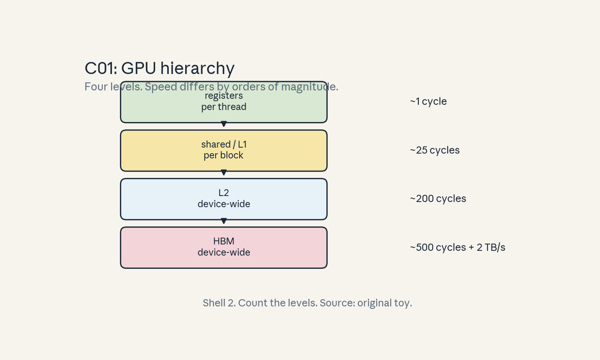
- Audit:
u02c01tof01. Before: data in HBM. After: data in registers. One rule: move up the hierarchy.
C02: kernels
Source, scope, objectives, dependencies
Calendar anchor: Week 3, Oct 07, “CUDA and GPU Programming for AI” (GPU execution model family). Scope: what a kernel is and how it launches. Objective: describe grid, blocks, threads for a vector add. Depends on P15.
Motivating question and tiny toy
Question: who computes element 700 of the output vector? Toy: add vectors of length 1024, 256 threads per block.
Mental model
A kernel is a work order posted on a board. The grid is
the set of crews (blocks). Each crew has workers
(threads). Worker i in crew b handles element
b * 256 + i. No worker talks to another crew without a
new work order.
Objects, shapes, assumptions
- Thread: one worker, has an index
threadIdx.x. - Block: up to 1024 threads, runs on one SM, has
blockIdx.x. - Grid: all blocks of one launch.
- For 1024 elements at 256/block: 4 blocks.
- Assumption: one thread per output element (the simple mapping, strided mappings exist).
Derivation
Global index = blockIdx.x * blockDim.x + threadIdx.x.
With 4 blocks of 256: indices 0..1023 cover the vector
exactly. Guard if (i < N) handles the tail when N is
not a multiple of block size.
Computed example
Toy: N = 1000, 256 threads/block. Blocks needed: ceil(1000/256) = 4. Threads launched: 1024. Idle: 24. The guard disables 24 threads. Lab-02 checks the index math in a CPU emulation.
Implementation and checks
def grid_for(n, block=256):
import math
blocks = math.ceil(n / block)
idle = blocks * block - n
return blocks, idle
b, idle = grid_for(1000)
assert (b, idle) == (4, 24)
Check: blocks * block >= n always, idle < block.
Complexity and costs
Launch cost is fixed per kernel (C08). Many tiny kernels pay it repeatedly, one big kernel pays once. This is the fusion argument (C03).
Nearest alternative and selection boundary
Nearest alternative: one thread loops over many elements (grid-stride loop). Selection boundary: use one-thread-per-element when N is large, use grid-stride when N is small or the tail is ragged.
Failure case and counterexample
Broken assumption: “more blocks are always better.” Blocks beyond the SM count queue up. Counterexample: 1M blocks of 1 thread each: launch overhead and scheduling dominate, the GPU is idle waiting for work assignment.
Research reading and falsifiable extension
Reading: the Oct 07 GPU execution model session. Falsifiable extension: time a vector add for block counts 1..1024 at fixed N. Hypothesis: time falls then flattens at the SM count, tiny blocks add overhead. Report the plateau.
Exercises
- E06 (recall): write the global index formula.
- E07 (numerical): N = 100000, block 512. Blocks and idle threads.
- E08 (failure diagnosis): output has zeros in the tail. Name the missing line.
- E09 (counterfactual): max 1 block per SM and 4 SMs. How many elements can 1024-thread blocks cover at once?
- E10 (research): state the plateau hypothesis with the SM count.
Visual units
- Figure
u02_c02_grid.png: grid of 4 blocks x 256 threads, one highlighted thread with its global index. Source: original toy. Shell 1.
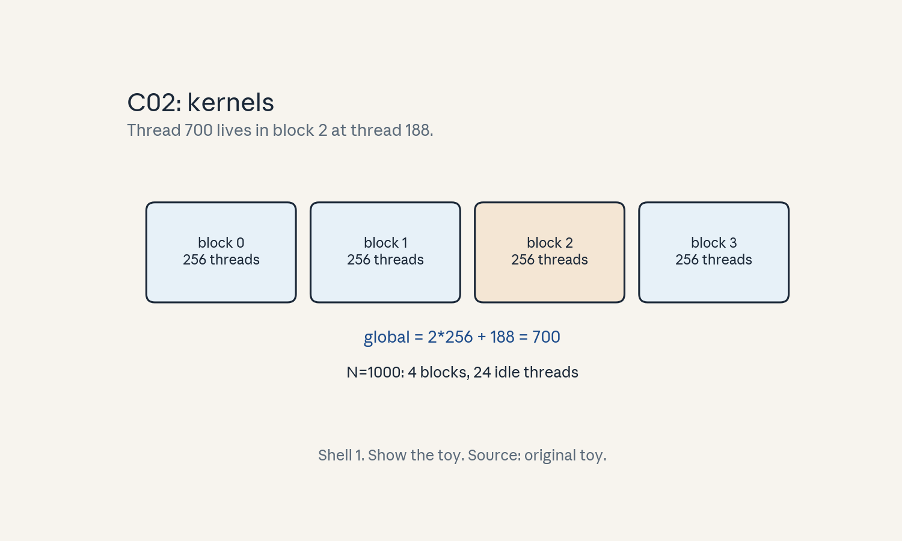
- Audit:
u02c02tof02. Before: work order. After: element assigned. One rule: index math.
C03: compilation/fusion
Source, scope, objectives, dependencies
Calendar anchor: Week 2, Sep 30, “Introduction to Compilers and the GPU Memory Hierarchy”, Week 3, Oct 07, “Fusion, Tiling, Caching vs. Recompute”. Scope: what compilers do to kernels. Objective: show fusion cutting memory traffic. Depends on P12.
Motivating question and tiny toy
Question: y = relu(x @ W + b) launches 3 kernels. Why
is 1 kernel better? Toy: x (64, 8), W (8, 8), fp16.
Mental model
Three separate deliveries versus one combined truck. Each
kernel launch reads inputs from HBM and writes outputs
back. Fusion loads x once, does matmul, bias, relu in
registers/shared, and writes y once. The middle
results never visit the warehouse.
Objects, shapes, assumptions
- Unfused: matmul writes (64, 8) to HBM, bias reads and writes it, relu reads and writes it: 3 round trips.
- Fused: one read of x and W, one write of y.
- Assumption: the intermediate fits on chip. If not, fusion fails and the compiler keeps separate kernels.
Derivation
Unfused traffic: read x, W (matmul), write T (64x8), read T, b, write T2, read T2, write y. Total ~5 passes over (64x8) fp16 = 5 * 1024 bytes, plus W reads twice more. Fused: read x once (1024 B), W once (128 B), write y once (1024 B). Traffic ratio ~2.5x less.
Computed example
Toy bytes (fp16): unfused ~5248 + W rereads, fused 2176. Real scale: a transformer MLP at B=8, T=2048, n=4096 writes a (8, 2048, 16384) intermediate: 536 MB per layer unfused. Fusion removes that write and the reread: ~1 GB traffic saved per layer per pass.
Implementation and checks
def traffic(unfused_passes, fused_passes, elems, bpe=2):
return unfused_passes * elems * bpe, fused_passes * elems * bpe
u, f = traffic(5, 2, 64 * 8)
assert u == 5120 and f == 2048
Check: fused passes < unfused passes whenever the intermediate fits on chip. Lab-02 verifies the ratio.
Complexity and costs
Fusion does not change FLOPs. It changes bytes moved, which is what matters in the bandwidth-bound regime. Compile time is the price: minutes for large graphs.
Nearest alternative and selection boundary
Nearest alternative: hand-written fused kernels. Selection boundary: use torch.compile for standard patterns, hand-write when the compiler fails to fuse a hot pattern (check with a profiler, not by faith).
Failure case and counterexample
Broken assumption: “compile always helps.” Graph breaks
(data-dependent control flow) split the graph and can
slow things down. Counterexample: a loop with a Python
if on tensor values breaks the graph each iteration,
compiled time exceeds eager time. Fix the breaks first.
Research reading and falsifiable extension
Reading: the Oct 07 fusion session. Falsifiable extension: take an MLP block, measure HBM traffic with and without torch.compile. Hypothesis: traffic drops by ~2x and the drop matches the intermediate size. Report both numbers.
Exercises
- E11 (recall): define fusion in one sentence.
- E12 (numerical): intermediate (8, 2048, 16384) fp16. Bytes saved by fusing one write plus one reread.
- E13 (failure diagnosis): compiled model is slower. Name the first thing to check.
- E14 (counterfactual): intermediate is 4 GB, on-chip memory 200 KB. Can fusion help?
- E15 (research): state the traffic-drop hypothesis.
Visual units
- Figure
u02_c03_fusion.png: two panels. Left: three kernels with HBM trips between. Right: one kernel, trips only at the edges. Source: original toy. Shell 3.
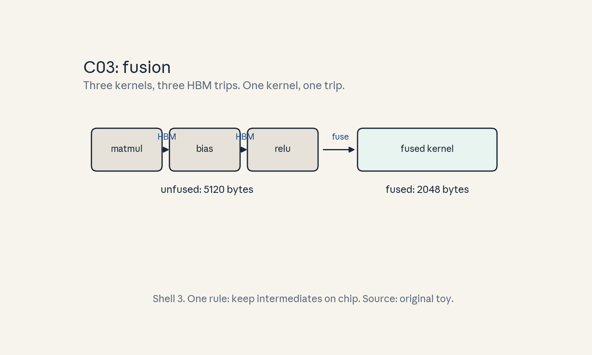
- Audit:
u02c03tof03. Before: 3 kernels. After: 1 kernel. One rule: keep intermediates on chip.
C04: arithmetic intensity
Source, scope, objectives, dependencies
Calendar anchor: Week 2, Sep 30, “Introduction to Arithmetic Intensity and Measures of Efficiency”. Scope: the definition and its use. Objective: compute I for matmul and matvec. Depends on P15.
Motivating question and tiny toy
Question: two kernels do the same FLOPs. One is 10x faster. What single number explains it? Toy: matmul (64x64)x(64x64) versus matvec (64x64)x(64,).
Mental model
Miles per gallon for compute. FLOPs are the miles, bytes moved are the gallons. A kernel that reuses each byte many times goes far on one tank. A kernel that touches each byte once is always thirsty.
Objects, shapes, assumptions
- I = FLOPs / bytes moved, in FLOP/byte.
- Matmul (m,k)x(k,n): FLOPs 2mkn, bytes ~2(mk+kn+mn) (fp16).
- Assumption: count the bytes the algorithm must move, not cache hits. Intensity is a property of the algorithm plus shapes, not of one run.
Derivation
Matmul 64x64: FLOPs = 264^3 = 524288. Bytes = 2(4096+4096+4096) = 24576. I = 21.3 FLOP/byte. Matvec 64x64: FLOPs = 26464 = 8192. Bytes = 2*(4096+64+64) = 8448. I = 0.97 FLOP/byte. Same weight matrix, 22x different intensity: the matvec reuses each weight once, the matmul reuses each weight 64 times.
Computed example
Real scale matmul: (2048, 4096)x(4096, 4096) fp16. FLOPs = 2204840964096 = 6.87e10. Bytes = 2(20484096 + 40964096 + 2048*4096) = 6.7e7. I = 1024 FLOP/byte. Real scale matvec (decode step): I ~ 1 FLOP/byte. This is the training/inference split from U01 C08, now as one number.
Implementation and checks
def intensity(flops, elems_moved, bpe=2):
return flops / (elems_moved * bpe)
assert abs(intensity(2*64**3, 3*64*64) - 21.33) < 0.01
assert abs(intensity(2*64*64, 64*64+2*64) - 0.97) < 0.01
Check: intensity rises with the reuse dimension. The lab sweeps the inner dimension and plots it.
Complexity and costs
Intensity decides the regime (C05). Raising it is the goal of batching (reuse weights across requests) and tiling (reuse data on chip).
Nearest alternative and selection boundary
Nearest alternative: measure achieved FLOP/s directly. Selection boundary: intensity diagnoses why a kernel is slow, FLOP/s only says that it is slow. Compute intensity first, then profile.
Failure case and counterexample
Broken assumption: “high intensity means fast.” A high-intensity kernel with poor parallelism (tiny grid) still stalls. Counterexample: a 64x64 matmul has I=21 but cannot fill a GPU, achieved FLOP/s is low. Check occupancy too (U04 C05).
Research reading and falsifiable extension
Reading: the Sep 30 intensity session. Falsifiable extension: sweep batch size for a linear layer and plot measured FLOP/s versus computed intensity. Hypothesis: FLOP/s rises with intensity then plateaus at the roof. Report the plateau intensity.
Exercises
- E16 (recall): write the intensity formula with units.
- E17 (numerical): matmul (128, 256)x(256, 512) fp16. FLOPs, bytes, intensity.
- E18 (failure diagnosis): I = 800 but achieved FLOP/s is 5 percent of peak. Name two causes.
- E19 (counterfactual): batch doubles. How does the decode-step intensity change?
- E20 (research): state the plateau hypothesis.
Visual units
- Figure
u02_c04_intensity.png: bars for matmul (21) versus matvec (0.97), toy. Source: original toy. Shell 2.
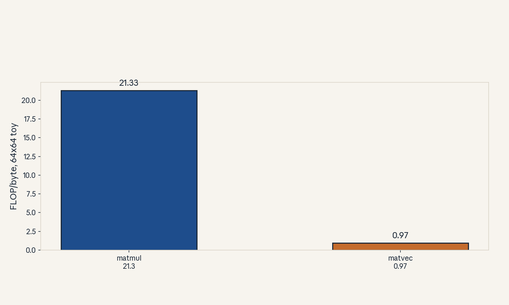
- Audit:
u02c04tof04. Before: bytes counted. After: one number. One rule: divide FLOPs by bytes.
C05: roofline
Source, scope, objectives, dependencies
Calendar anchor: Week 2, Sep 30 (measures of efficiency family). Scope: the roofline model. Objective: plot it and read a kernel’s bound. Depends on C04.
Motivating question and tiny toy
Question: the kernel does 21 FLOP/byte on a machine with ridge point 150. What is its speed limit? Toy: pi = 3e14 FLOP/s, beta = 2e12 B/s (labeled toy specs).
Mental model
A speed limit sign with two lines. Below the ridge, the road is narrow (bandwidth): speed = beta * I. Above the ridge, the engine caps out: speed = pi. The ridge point I* = pi / beta is where the two lines meet.
Objects, shapes, assumptions
- Attainable = min(pi, beta * I).
- Ridge I* = pi / beta = 150 FLOP/byte for the toy.
- Assumption: the kernel is well-parallelized and the roof values are sustained, not nameplate peaks.
Derivation
Bytes needed per second at intensity I and speed S: S / I bytes/s. Feasible if S / I <= beta, so S <= betaI. Also S <= pi. Combine: S <= min(pi, betaI). At I=21: beta*I = 4.2e13, below pi, so the kernel is memory-bound with a 42 TFLOP/s ceiling.
Computed example
Toy: I = 21 -> ceiling 4.2e13 FLOP/s (14 percent of pi). I = 1024 -> ceiling pi = 3e14 (compute-bound). Decode step I ~ 1 -> ceiling 2e12 FLOP/s, under 1 percent of peak. This single picture explains U01 C08.
Implementation and checks
def roofline(I, pi=3e14, beta=2e12):
return min(pi, beta * I)
assert roofline(21) == 2e12 * 21
assert roofline(1024) == 3e14
assert roofline(150) == 3e14 # ridge: both lines meet
Check: continuity at the ridge. Lab-02 plots the full roofline with kernel points.
Complexity and costs
The roofline is a planning tool, not a profiler. It tells you which ceiling you are under before you optimize.
Nearest alternative and selection boundary
Nearest alternative: full profiling (nsight). Selection boundary: roofline first for direction, profiler for the exact stall. Never optimize without knowing the bound.
Failure case and counterexample
Broken assumption: “the roof is achievable.” Real kernels sit below the roof (efficiency < 100 percent). Counterexample: a kernel at I=1024 achieving 40 percent of pi is normal, not broken. The roof is a ceiling, not a promise.
Research reading and falsifiable extension
Reading: the Sep 30 efficiency session. Falsifiable extension: place 5 kernels of known intensity on the roofline and measure achieved FLOP/s. Hypothesis: all points sit on or below the roof, none above. A point above the roof falsifies the measurement, not the model.
Exercises
- E21 (recall): write the roofline formula and define the ridge.
- E22 (numerical): toy specs. Ceiling at I = 0.97, I = 21, I = 150, I = 2000.
- E23 (failure diagnosis): measured point above the roof. What do you check first?
- E24 (counterfactual): beta doubles. New ridge and the new bound at I = 21.
- E25 (research): state the no-point-above hypothesis.
Visual units
- Figure
u02_c05_roofline.png: roofline with ridge marked, kernel points at I = 0.97, 21, 1024. Source: original toy. Shell 3.
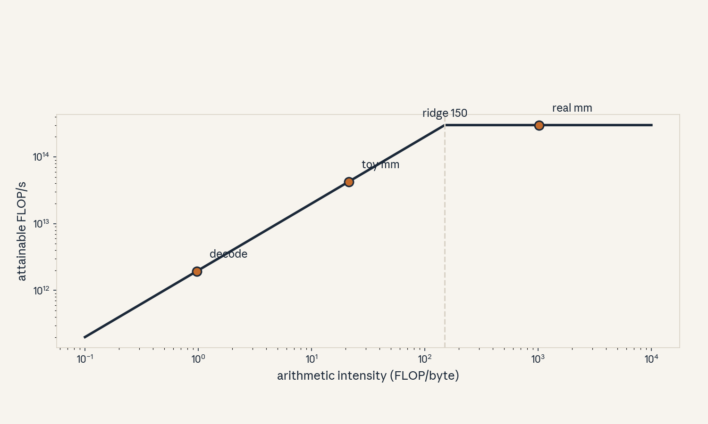
- Audit:
u02c05tof05. Before: intensity. After: bound. One rule: take the minimum.
C06: layouts
Source, scope, objectives, dependencies
Calendar anchor: Week 2, Sep 30 (memory hierarchy family). Scope: how tensor layout changes memory traffic. Objective: compute strides and name the fast axis. Depends on P12.
Motivating question and tiny toy
Question: the same (4, 8) matrix reads 2x slower one way. Why? Toy: row-major (4, 8) fp16, read one column.
Mental model
Books on a shelf. Row-major shelves whole rows together. Reading a row is one grab. Reading a column is 4 separate grabs across the shelf. The data is the same, the trip count differs.
Objects, shapes, assumptions
- Row-major (C order): stride of axis 1 is 1 element. Shape (4, 8): strides (8, 1) in elements.
- Column read touches 4 far-apart addresses.
- Assumption: cache lines are 128 bytes, one line holds 64 fp16 elements.
Derivation
Row read: 8 contiguous elements = 16 bytes, one cache line, possibly shared with neighbors. Column read: 4 addresses 16 bytes apart, each pulls a 128-byte line, using 2 bytes of each. Waste factor 64x in the worst case. Coalescing (U04 C02) is the GPU version of this rule.
Computed example
Toy: (4, 8) fp16 = 64 bytes. Row read: 1 line. Column read: 4 lines = 512 bytes moved for 8 bytes wanted. Real scale: attention scores (T, T) read along the wrong axis waste the same way, this is why layouts like blocked formats exist.
Implementation and checks
import numpy as np
a = np.zeros((4, 8), dtype=np.float16)
assert a.strides == (16, 2) # bytes: row 16, element 2
b = np.asfortranarray(a)
assert b.strides == (2, 8)
Check: strides tell the fast axis. Lab-02 times row versus column sums in numpy.
Complexity and costs
Layout does not change FLOPs. It changes bytes moved by up to the cache-line waste factor. Free speedup when fixed.
Nearest alternative and selection boundary
Nearest alternative: transpose the tensor once, then read fast. Selection boundary: transpose when the tensor is read many times along the slow axis, read slowly when it is read once.
Failure case and counterexample
Broken assumption: “contiguous is always fastest.” For column-heavy access, Fortran order wins. Counterexample: the column sum on the Fortran-order toy beats the C-order toy. Match layout to access.
Research reading and falsifiable extension
Reading: the Sep 30 hierarchy session. Falsifiable extension: time row vs column reduction on (4096, 4096) in both orders. Hypothesis: each order wins on its fast axis by a factor near the cache-line ratio. Report both ratios.
Exercises
- E26 (recall): write C-order strides for (4, 8) fp16 in bytes.
- E27 (numerical): column read of (4, 8) fp16. Lines touched, bytes moved, bytes wanted.
- E28 (failure diagnosis): kernel is slow, access is strided by 64 elements. Name the fix.
- E29 (counterfactual): cache lines were 16 bytes. How does the waste change?
- E30 (research): state the layout-match hypothesis.
Visual units
- Figure
u02_c06_layout.png: 4x8 grid, row access as one bar, column access as 4 scattered cells. Source: original toy. Shell 1.
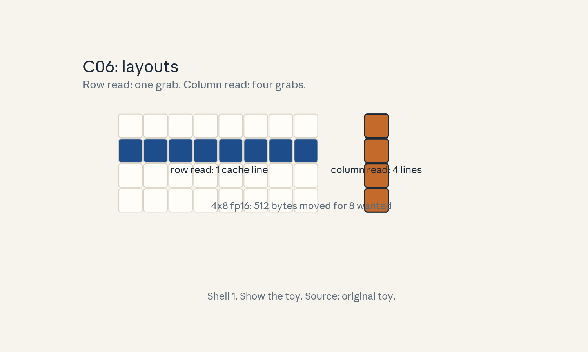
- Audit:
u02c06tof06. Before: slow axis. After: fast axis. One rule: match layout to access.
C07: vectorization
Source, scope, objectives, dependencies
Calendar anchor: Week 3, Oct 07 (GPU execution model family). Scope: SIMD and vectorized memory access. Objective: explain why float4 loads beat float loads. Depends on P15.
Motivating question and tiny toy
Question: loading 4 floats at once is faster than 4 separate loads. What changed? Toy: 1024 fp32 numbers.
Mental model
A shopping cart versus four trips. One wide load moves 16 bytes in one instruction. Four narrow loads pay the instruction cost four times and may split across cache lines. Same groceries, fewer trips.
Objects, shapes, assumptions
- float4: 16 bytes per thread per load.
- 1024 fp32 = 4096 bytes = 256 float4 loads versus 1024 scalar loads.
- Assumption: addresses are 16-byte aligned. Odd alignment breaks vectorization.
Derivation
Instruction count drops 4x. Memory transactions merge: a warp of 32 threads loading float4 moves 512 bytes in one coalesced pattern (U04 C02). The bytes are the same, the overhead per byte falls.
Computed example
Toy: 1024 scalar loads vs 256 vector loads. At 1e9 loads/s issue rate, the vector form saves ~0.77 us per pass. Small per pass, large at billions of passes.
Implementation and checks
def loads(n, width):
import math
return math.ceil(n / width)
assert loads(1024, 1) == 1024
assert loads(1024, 4) == 256
Check: alignment first. Lab-02 emulates the trip count.
Complexity and costs
Vectorization is a constant-factor win, typically 2-4x on memory-bound kernels. It never changes the roofline regime.
Nearest alternative and selection boundary
Nearest alternative: rely on the compiler to vectorize. Selection boundary: trust the compiler for simple loops, write explicit vector types in hot kernels and verify in the generated code.
Failure case and counterexample
Broken assumption: “wider is always better.” Past the alignment limit or with divergent access, wide loads waste bytes. Counterexample: float4 on a strided pattern loads 4x the bytes for the same wanted data.
Research reading and falsifiable extension
Reading: the Oct 07 execution model session. Falsifiable extension: microbenchmark scalar vs float4 copy at several sizes. Hypothesis: float4 wins by ~2x at large sizes, ~1x at tiny sizes (overhead dominates). Report the crossover size.
Exercises
- E31 (recall): define vectorized load in one line.
- E32 (numerical): 1M fp32 numbers. Scalar vs float4 load counts.
- E33 (failure diagnosis): float4 kernel is slower. Name the alignment check.
- E34 (counterfactual): 8-byte alignment only. Widest safe vector?
- E35 (research): state the crossover hypothesis.
Visual units
- Figure
u02_c07_vector.png: 4 narrow trips versus 1 wide trip moving the same 16 bytes. Source: original toy. Shell 3.
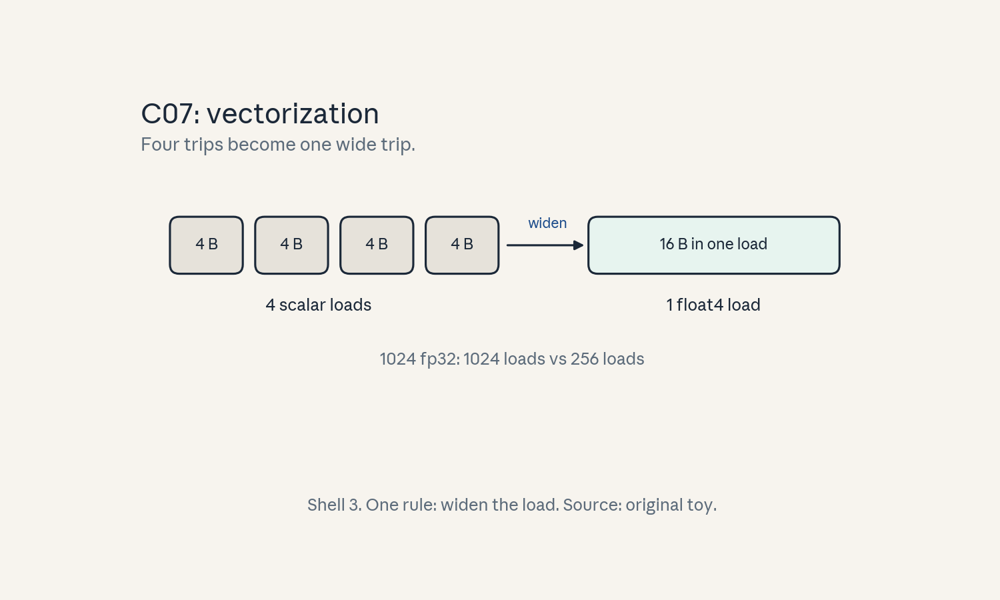
- Audit:
u02c07tof07. Before: 4 trips. After: 1 trip. One rule: widen the load.
C08: launch costs
Source, scope, objectives, dependencies
Calendar anchor: Week 3, Oct 07 (GPU execution model family). Scope: kernel launch overhead. Objective: decide when many small kernels hurt. Depends on C02.
Motivating question and tiny toy
Question: 1000 kernels of 1 us work each take how long? Toy: launch overhead 5 us each (labeled toy number).
Mental model
Toll booths. Each kernel pays the toll (launch overhead) plus the road time (work). A thousand short trips pay a thousand tolls. One long trip pays one.
Objects, shapes, assumptions
- Launch overhead: ~3-10 us per kernel (toy: 5 us).
- Total = launches * overhead + work.
- Assumption: launches are serial from one stream (C09 covers overlap).
Derivation
1000 kernels * (5 us + 1 us) = 6 ms. Fused into 1 kernel: 5 us + 1000 us = 1.005 ms. The overhead dominates the unfused total 5 to 1.
Computed example
Real scale: a transformer layer launches ~50 small kernels (norms, biases, drops). At 5 us each: 250 us overhead per layer per step. At 32 layers: 8 ms per step of pure overhead. This is why graphs and fusion matter at small batch.
Implementation and checks
def total(nk, overhead_us, work_us):
return nk * overhead_us + nk * work_us
assert total(1000, 5, 1) == 6000
assert total(1, 5, 1000) == 1005
Check: overhead share = nk*overhead / total. The lab plots it versus kernel count.
Complexity and costs
Launch cost is O(1) per kernel. The fix is fewer kernels (fusion, graphs), not faster kernels.
Nearest alternative and selection boundary
Nearest alternative: CUDA graphs (record once, replay cheaply). Selection boundary: graphs when the launch sequence is static, fusion when the ops can merge.
Failure case and counterexample
Broken assumption: “overhead is negligible.” At large batch the work dominates and overhead is noise. Counterexample: the same 50-kernel layer at batch 512 spends 100 ms on work, 250 us overhead is 0.25 percent. Measure the ratio before optimizing.
Research reading and falsifiable extension
Reading: the Oct 07 execution model session. Falsifiable extension: time N empty kernels for N in {1..10000}. Hypothesis: linear fit with slope = overhead. Report the slope.
Exercises
- E36 (recall): write the total-time formula.
- E37 (numerical): 50 kernels, 5 us overhead, 20 us work each. Overhead share.
- E38 (failure diagnosis): small-batch inference is slow, GPU utilization low. Name the suspect.
- E39 (counterfactual): overhead were 0. What changes in kernel design?
- E40 (research): state the linear-fit hypothesis.
Visual units
- Figure
u02_c08_launch.png: stacked bars, 1000 small kernels (overhead-dominated) vs 1 fused kernel. Source: original toy. Shell 3.
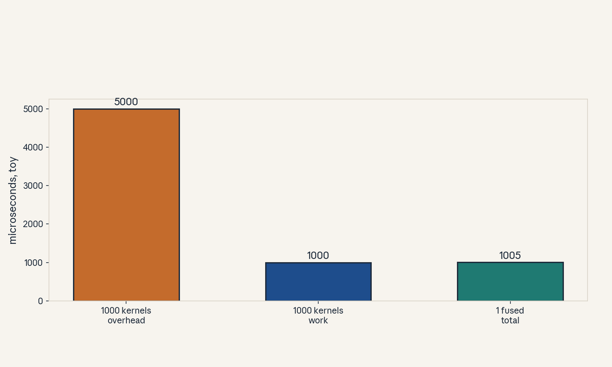
- Audit:
u02c08tof08. Before: many tolls. After: one toll. One rule: fuse or graph.
C09: concurrency
Source, scope, objectives, dependencies
Calendar anchor: Week 3, Oct 07 (GPU execution model family). Scope: streams and overlap. Objective: show overlap hiding copy time. Depends on C02.
Motivating question and tiny toy
Question: the GPU computes for 10 ms and copies for 10 ms. Must the step take 20 ms? Toy: one compute kernel, one host-to-device copy.
Mental model
Two checkout lanes. The compute lane and the copy lane run at once on different hardware (SMs vs copy engine). Put the next batch’s copy in lane 2 while lane 1 computes the current batch. The step takes max, not sum.
Objects, shapes, assumptions
- Stream: ordered queue of work on the GPU.
- Copy engine: separate hardware from SMs.
- Overlapped time = max(compute, copy) with perfect overlap.
- Assumption: the copy does not touch data the kernel still needs (else a race).
Derivation
Serial: 10 + 10 = 20 ms. Overlapped: max(10, 10) = 10 ms. Saving = min(compute, copy) = 10 ms. Events order the lanes: the kernel waits on the copy’s event only where data is shared.
Computed example
Toy: compute 10 ms, copy 10 ms, overlap saves 10 ms (2x). Real scale: prefetch next micro-batch during the current one, dataloader overlap is the same idea on the CPU side (U06, second builder).
Implementation and checks
def overlapped(a, b):
return max(a, b)
assert overlapped(10, 10) == 10
assert overlapped(10, 3) == 10
Check: saving never exceeds the shorter task. The lab emulates two lanes on a timeline.
Complexity and costs
Overlap is free performance when the hardware has separate engines. The cost is correctness care: synchronize shared data.
Nearest alternative and selection boundary
Nearest alternative: bigger batches (amortize the copy without overlap). Selection boundary: overlap when batch size is fixed by memory, grow the batch when memory allows.
Failure case and counterexample
Broken assumption: “streams always overlap.” Two kernels on the SMs do not overlap if SMs are full, the copy engine is the separate lane, not another stream. Counterexample: two compute kernels on different streams with 100 percent occupancy run serially in effect.
Research reading and falsifiable extension
Reading: the Oct 07 execution model session. Falsifiable extension: time compute+copy serial vs on two streams. Hypothesis: two-stream time approaches max, serial approaches sum. Report both.
Exercises
- E41 (recall): define stream in one line.
- E42 (numerical): compute 6 ms, copy 10 ms. Best overlapped time and saving.
- E43 (failure diagnosis): two streams, no speedup. Both kernels at 100 percent occupancy. Explain.
- E44 (counterfactual): no copy engine. Can overlap still help?
- E45 (research): state the max-vs-sum hypothesis.
Visual units
- Figure
u02_c09_overlap.png: timeline, serial (20 ms) versus overlapped (10 ms) lanes. Source: original toy. Shell 3.
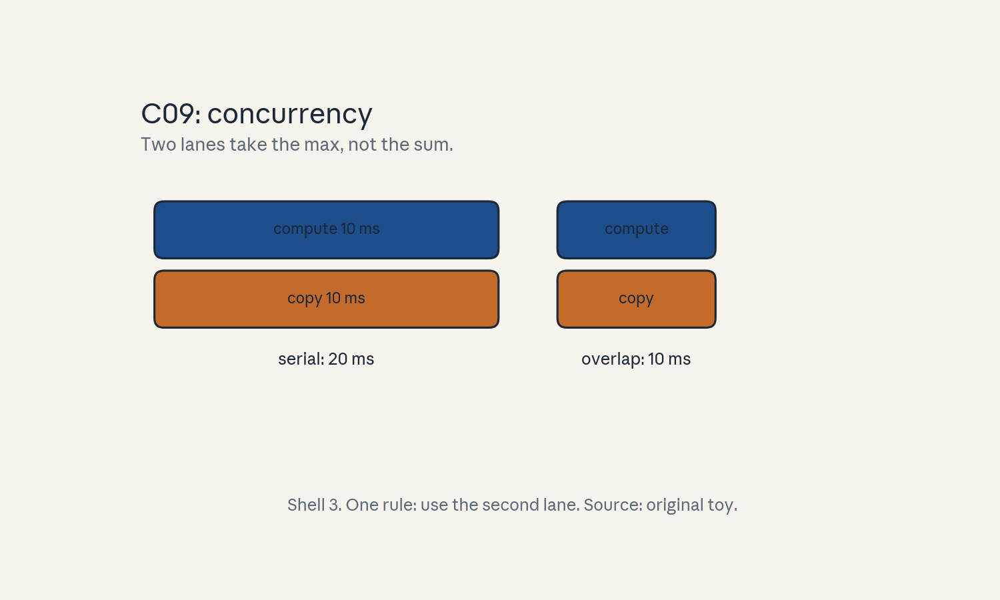
- Audit:
u02c09tof09. Before: sum. After: max. One rule: use the second lane.
C10: tensor cores
Source, scope, objectives, dependencies
Calendar anchor: Week 3, Oct 07 (efficient attention hardware family, tensor cores named in the Oct 14 sparsity session). Scope: what tensor cores do and need. Objective: state the shape and dtype contract. Depends on P15.
Motivating question and tiny toy
Question: the same matmul runs 8x faster with one flag. What did the flag buy? Toy: (64, 64) fp16 matmul.
Mental model
A freight elevator versus stairs. Tensor cores are matrix-multiply units that do a whole tile (e.g. 16x16x16) per instruction. The stairs (CUDA cores) do one multiply-add per thread. The elevator needs the cargo in the right crates (shapes, dtypes, alignment).
Objects, shapes, assumptions
- MMA tile: e.g. 16x16x16 per instruction (toy spec).
- Needs: fp16/bf16/int8 inputs, multiples of 8/16 in the contracted dims, aligned memory.
- Peak toy: 3e14 FLOP/s with tensor cores vs ~2e13 without (labeled toy specs).
- Assumption: dense. Sparse tensor cores need 2:4 sparsity (U05 C06).
Derivation
A (64, 64, 64) matmul has 524288 FLOPs. At 3e14 FLOP/s: 1.7 us. At 2e13: 26 us. The ratio is the tensor-core gain, ~15x on this toy. Real gains are smaller (memory, overhead).
Computed example
Toy shapes that qualify: m, n, k all multiples of 8, fp16. A (62, 64, 64) matmul may fall back to CUDA cores or pad. Padding to 64 wastes (6464 - 6264) work but still wins.
Implementation and checks
def qualifies(m, n, k, dtype="fp16"):
return (dtype in ("fp16", "bf16", "int8")
and m % 8 == 0 and n % 8 == 0 and k % 8 == 0)
assert qualifies(64, 64, 64)
assert not qualifies(62, 64, 64)
Check: divisibility first. The lab checks shapes for a small model.
Complexity and costs
Tensor cores do not change complexity. They raise the pi in the roofline for qualifying shapes, moving the ridge right.
Nearest alternative and selection boundary
Nearest alternative: CUDA-core matmul (any shape). Selection boundary: pad and use tensor cores when the waste is small, accept CUDA cores for odd shapes that dominate the workload.
Failure case and counterexample
Broken assumption: “fp16 always uses tensor cores.” Wrong shapes or unaligned memory silently fall back. Counterexample: a (3, 4096, 4096) batched matmul at batch 3 runs at CUDA-core speed. Profile, do not assume.
Research reading and falsifiable extension
Reading: vendor docs for the contract (publicly documented), the Oct 14 session names sparse tensor cores. Falsifiable extension: time (m, 4096, 4096) fp16 matmul for m in {1..64}. Hypothesis: a jump at multiples of 8 where tensor cores engage. Report the jump sizes.
Exercises
- E46 (recall): name the three contract items (dtype, shape, alignment).
- E47 (numerical): (64,64,64) FLOPs and time at both toy peaks.
- E48 (failure diagnosis): fp16 matmul at 5 percent of peak. First shape check?
- E49 (counterfactual): m = 3 always. Pad or accept? Show the waste math.
- E50 (research): state the jump hypothesis.
Visual units
- Figure
u02_c10_tcore.png: two bars (CUDA cores vs tensor cores) for the toy matmul time. Source: original toy. Shell 3.
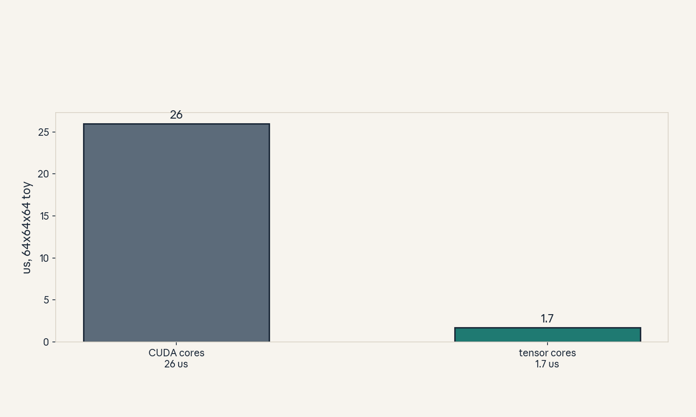
- Audit:
u02c10tof10. Before: stairs. After: elevator. One rule: crate the cargo right.
C11: precision
Source, scope, objectives, dependencies
Calendar anchor: Week 4, Oct 14, “Quantization (How are numbers represented in computers?, K-means Quantization, Linear Quantization)”. Scope: formats and their tradeoffs. Objective: compare fp32/fp16/bf16/fp8/int8. Depends on P12.
Motivating question and tiny toy
Question: fp16 and bf16 are both 16 bits. Why does training prefer bf16? Toy: represent 1e-5 and 100000.
Mental model
Two rulers. fp16 has fine marks but a short ruler (range to 65504, fine near zero). bf16 has a long ruler with coarse marks (fp32 range, fp16 precision). Training needs the long ruler (gradients span scales), inference needs fine marks near zero (weights are small).
Objects, shapes, assumptions
- fp32: 4 bytes, full range and precision.
- fp16: 2 bytes, range to 65504, 10 mantissa bits.
- bf16: 2 bytes, fp32 range, 7 mantissa bits.
- fp8/int8: 1 byte, narrow range, needs scaling (U05).
- Assumption: values fit the format range, overflow is a bug, not a rounding.
Derivation
fp16 max 65504: a gradient of 1e5 overflows to inf. bf16 keeps fp32’s exponent: 1e5 is fine, but 1.0001 rounds coarsely. The choice is range (bf16) versus precision (fp16).
Computed example
Toy: value 100000. fp16: inf (overflow). bf16: ~99840 (coarse but finite). Value 1e-5: fp16 fine, bf16 rounds to ~9.8e-6. Lab-02 demonstrates both.
Implementation and checks
import numpy as np
big = np.float16(100000.0)
assert np.isinf(big) # overflow, not a bug in numpy
small = np.float32(1e-5).astype(np.float16)
assert small != 0
Check: overflow to inf is the fp16 range failure. Underflow to 0 is the small-value failure.
Complexity and costs
Halving bytes halves memory traffic and doubles effective bandwidth. The price is numerical: range or precision must be managed (loss scaling, U05).
Nearest alternative and selection boundary
Nearest alternative: stay in fp32. Selection boundary: fp32 for the master weights and optimizer, bf16/fp16 for compute, int8/fp8 for inference weights (U05).
Failure case and counterexample
Broken assumption: “bf16 is always safe.” bf16’s coarse mantissa can stall tiny updates: a 1e-7 update to a 1.0 weight rounds to zero. Counterexample: loss stops falling in bf16 without loss scaling while fp32 keeps improving. Keep master weights in fp32.
Research reading and falsifiable extension
Reading: the Oct 14 quantization session. Falsifiable extension: train a tiny model in fp16 vs bf16 vs fp32. Hypothesis: fp16 diverges or stalls without loss scaling, bf16 tracks fp32. Report final losses.
Exercises
- E51 (recall): state the fp16 vs bf16 tradeoff in one line.
- E52 (numerical): which of {1e5, 1e-5} overflow in fp16? Which lose precision in bf16?
- E53 (failure diagnosis): inf loss at step 100 in fp16. Two suspects.
- E54 (counterfactual): only int8 compute existed. What breaks first in training?
- E55 (research): state the loss-tracking hypothesis.
Visual units
- Figure
u02_c11_precision.png: two rulers (fp16 short/fine, bf16 long/coarse) with the toy values marked. Source: original toy. Shell 8 (compare).
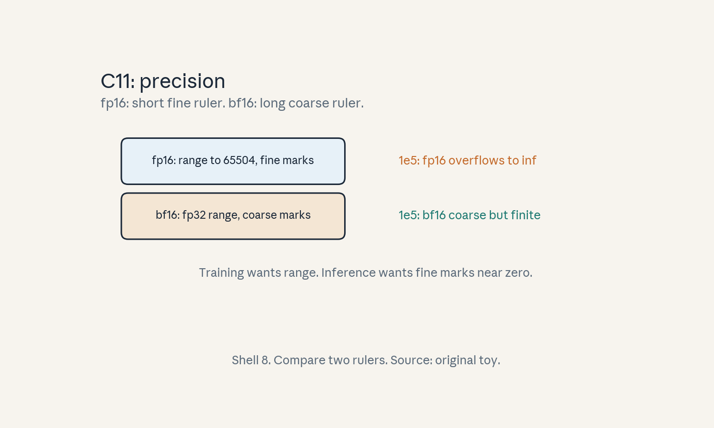
- Audit:
u02c11tof11. Before: fp32. After: 16 bit. One rule: pick range or precision.
C12: memory-bound/compute-bound tests
Source, scope, objectives, dependencies
Calendar anchor: Week 2, Sep 30 (measures of efficiency), Week 2, Oct 04 (efficiency of KV caching). Scope: how to test which bound applies. Objective: run three diagnostic tests. Depends on C04, C05.
Motivating question and tiny toy
Question: the kernel is slow. Is it thirsty (memory) or weak (compute)? Toy: a linear layer at batch 1 and batch 64.
Mental model
A doctor’s triage. Test 1: double the batch, if speed doubles, you were bandwidth-bound (more reuse helped). Test 2: halve the precision, if speed doubles, you were bandwidth-bound. Test 3: compute intensity and check the roofline side.
Objects, shapes, assumptions
- Test A (batch sweep): bandwidth-bound kernels speed up with batch, compute-bound ones do not.
- Test B (precision halving): halves bytes, helps only the bandwidth-bound.
- Test C (roofline): I < I* means memory-bound.
- Assumption: the kernel is well-parallelized, else Test A confounds with occupancy.
Derivation
Linear layer (4096, 4096) fp16 at batch 1: I ~ 1 (matvec-like), memory-bound. At batch 64: I ~ 64, past the toy ridge 150? No: 64 < 150, still memory-bound but 64x the ceiling. At batch 512: I ~ 512 > 150, compute-bound. The tests locate the flip.
Computed example
Toy ridge 150. Batch 1: ceiling = 2e12 * 1 = 2 TFLOP/s. Batch 64: ceiling = 128 TFLOP/s. Batch 512: ceiling = pi = 300 TFLOP/s. Lab-02 computes all three.
Implementation and checks
def bound(I, pi=3e14, beta=2e12):
return "memory" if I < pi / beta else "compute"
assert bound(1) == "memory"
assert bound(64) == "memory"
assert bound(512) == "compute"
Check: the three tests must agree. Disagreement means a confounder (occupancy, launch overhead).
Complexity and costs
The tests are cheap: two runs and one division. Run them before any optimization.
Nearest alternative and selection boundary
Nearest alternative: full profiler timeline. Selection boundary: the three tests for direction in minutes, the profiler for the exact stall after.
Failure case and counterexample
Broken assumption: “the tests always agree.” Low occupancy makes batch-sweep look compute-bound while intensity says memory-bound. Counterexample: tiny grid at batch 1, doubling the batch helps via occupancy, not bandwidth. Fix occupancy first.
Research reading and falsifiable extension
Reading: the Sep 30 and Oct 04 efficiency sessions. Falsifiable extension: classify 10 kernels with all three tests. Hypothesis: at least 8 agree across tests, disagreements trace to occupancy or overhead. Report the confusion.
Exercises
- E56 (recall): name the three tests in one line each.
- E57 (numerical): toy ridge 150. Classify I = 0.5, 100, 300.
- E58 (failure diagnosis): tests disagree. Name two confounders.
- E59 (counterfactual): batch cannot grow (memory). How else to test the bound?
- E60 (research): state the agreement hypothesis.
Visual units
- Figure
u02_c12_tests.png: decision flowchart of the three tests with the toy outcomes. Source: original toy. Shell 5 (checklist).
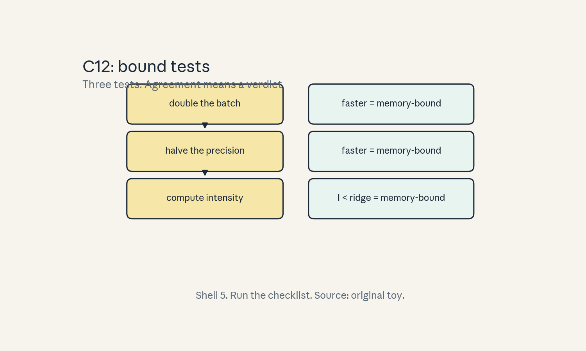
- Audit:
u02c12tof12. Before: slow kernel. After: named bound. One rule: test, do not guess.
Unit chapter plate
Figure u02_chapter.png: left shows the naive view
(FLOPs only, one memory pool), center shows the machine
(hierarchy levels, tensor cores, streams), right shows
the hardware-aware view (intensity, roofline, fused
kernels), bottom line: “Count bytes first. FLOPs
second.” Numbers from the lesson toys.
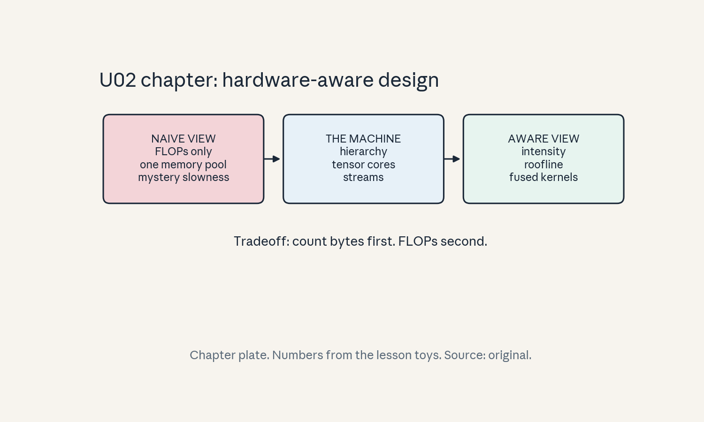
Russian-doll ladder: the roofline (major mechanism)
- Shell 0: question: what caps this kernel’s speed? Observable: achieved FLOP/s.
- Shell 1: toy: matmul 64x64 vs matvec 64x64 (C04).
- Shell 2: objects: FLOPs, bytes, pi, beta.
- Shell 3: rule: attainable = min(pi, beta * I).
- Shell 4: algorithm:
roofline()in C05. - Shell 5: invariant: continuity at the ridge, no point above the roof.
- Shell 6: change beta only, predict the ridge moves, confirm in lab-02.
- Shell 7: break the sustained-roof assumption: a low-occupancy kernel sits far below the roof.
- Shell 8: compare roofline triage vs full profiler under equal time budget.
- Shell 9: falsifiable extension in C05.
- Shell 10: production: the bound decides whether to buy bandwidth (HBM) or compute (more SMs).
Role bridge
- Research engineer: the three bound tests (C12) are the first move in any profiling session.
- MLOps: launch overhead math (C08) sizes small-batch serving budgets.
- FDE: the roofline gives a one-picture answer to “why is it slow” for stakeholders.